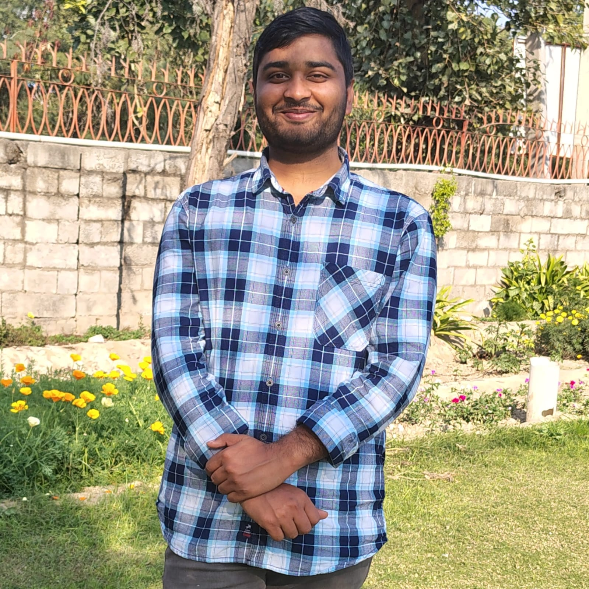

Full Stack Developer | Java Enthusiast | Data Analyst
🚀 I’m Sachin Yadav, a highly motivated Computer Science student from Guru Gobind Singh Indraprastha University (GGSIPU), passionate about solving real-world problems with technology. With a strong foundation in Java, full stack web development, and data analytics, I'm focused on creating software solutions that are both impactful and scalable.
Over the past year, I’ve enriched my skills through hands-on internships and certifications. Notably, I completed the prestigious Infosys AI Internship 6.0 via Springboard, where I explored machine learning algorithms, NLP fundamentals, and ethical AI frameworks using Python. I also interned with CSRBOX + IBM SkillsBuild in a data analytics role, gaining experience in Excel, Python, and data visualization tools to derive meaningful insights from large datasets.
My technical journey includes building an IoT-based Smart Dust Collector during my internship at AICTE Idea Lab, USICT. This project involved CAD modeling in Fusion 360, 3D printing, and laser engraving to design an efficient industrial system for environmental safety.
I’ve also explored a range of tools and technologies including MySQL, PostgreSQL, HTML, CSS, JavaScript, Python, C/C++, and Go. My work spans both frontend and backend development, along with hardware integration and AI.
Apart from tech, I’m a firm believer in the power of continuous learning, teamwork, and innovation. I love collaborating with like-minded people and contributing to meaningful, socially impactful projects. Currently, I’m exploring the Go programming language and always open to new ideas and collaborations.
Internship: AICTE Idea Lab, USICT
Technologies Used: Autodesk Fusion 360, 3D Printing, Laser Engraving, Arduino, Sensors
Designed and built a smart dust collection system for industrial environments using CAD modeling in Fusion 360 and physical prototyping with 3D printers and laser engraving machines. The system integrated environmental sensors and a microcontroller to detect and remove airborne particles, improving air quality and sustainability in workshop/lab areas.
Internship: Infosys Springboard AI Internship 6.0
Technologies Used: Python, scikit-learn, Pandas, Jupyter Notebook
Built mini projects applying foundational machine learning algorithms such as Linear Regression, Decision Trees, and K-Means Clustering. Also explored Natural Language Processing (NLP) basics including text classification and sentiment analysis.
Internship: IBM SkillsBuild & CSRBOX Data Analytics Program
Technologies Used: Excel, Python, matplotlib, seaborn, Google Sheets
Conducted comprehensive data analysis and visualization tasks using both spreadsheet tools and Python libraries. Identified trends, cleaned large datasets, and presented key insights in a storytelling format to simulate client reporting.
Technologies Used: HTML, CSS, JavaScript
Designed and developed a responsive personal portfolio website to showcase my technical background, project work, skills, and certifications.
Email: sachin01092004yadav@gmail.com
GitHub: github.com/Sachin-0109-yadav
Phone: +91-8360645657
LinkedIn: linkedin.com/in/sachin-31y08/